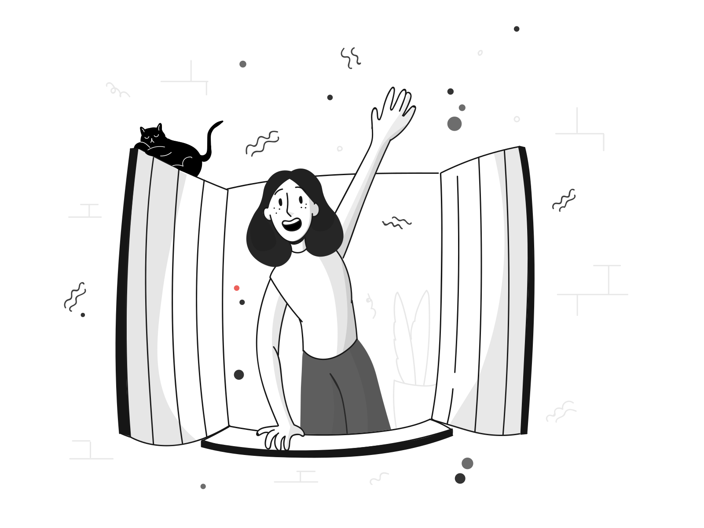

{% include "includes/encabezadoRecursos.html" %} {% include "includes/cargador.html" %}
Terminado.
arrow_back
Terminado.
Volver al inicio
La revisión ha sido terminada.
La revisión ha sido terminada.
El resultado ha sido registrado satisfactoriamente.

Regresar
Apelar resultado
{% include "includes/footerRecursos.html" %}